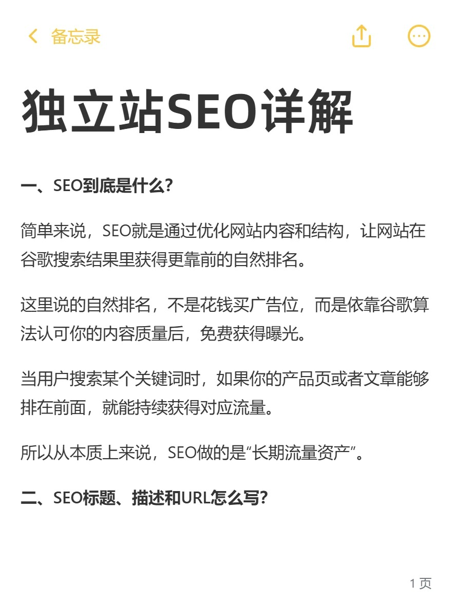
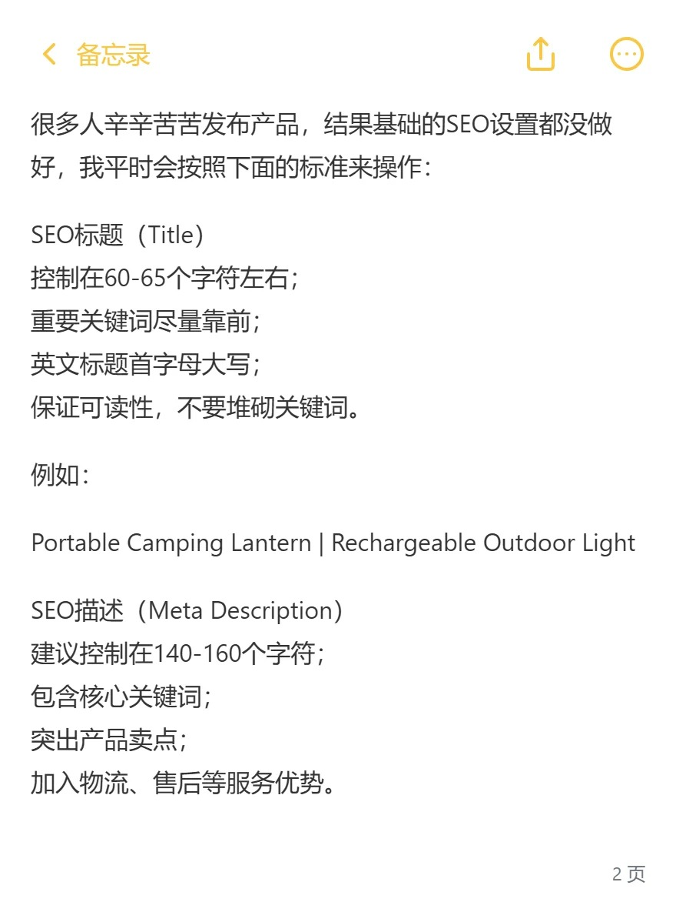
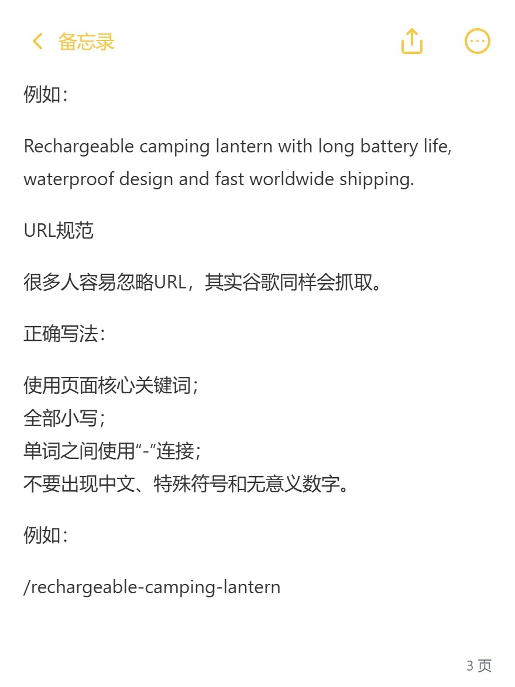
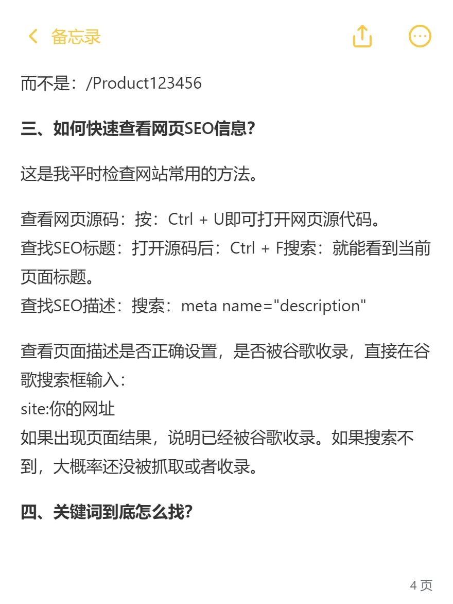
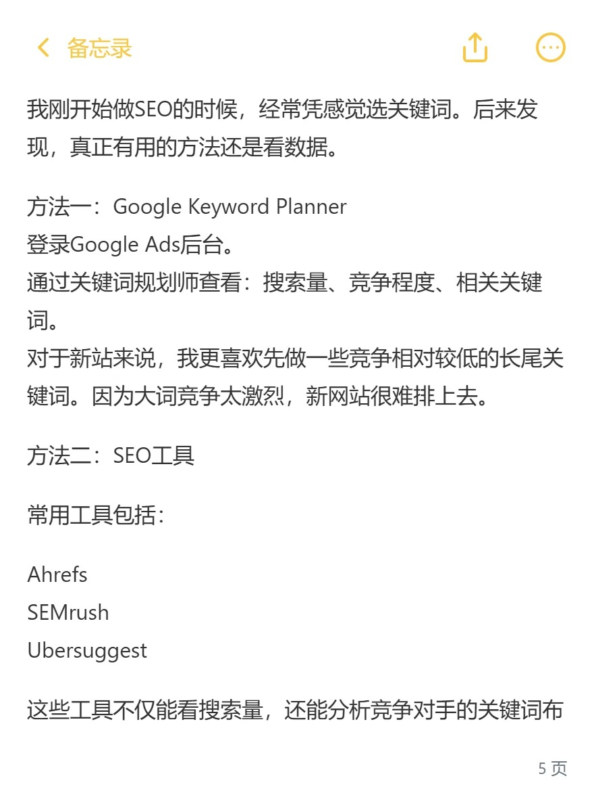
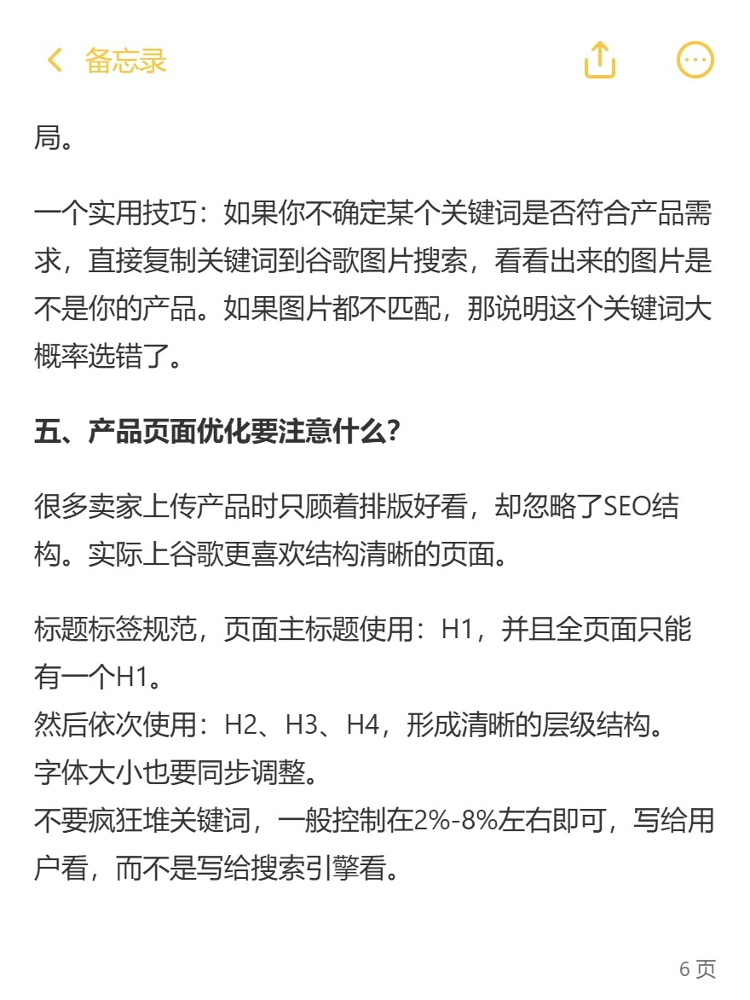
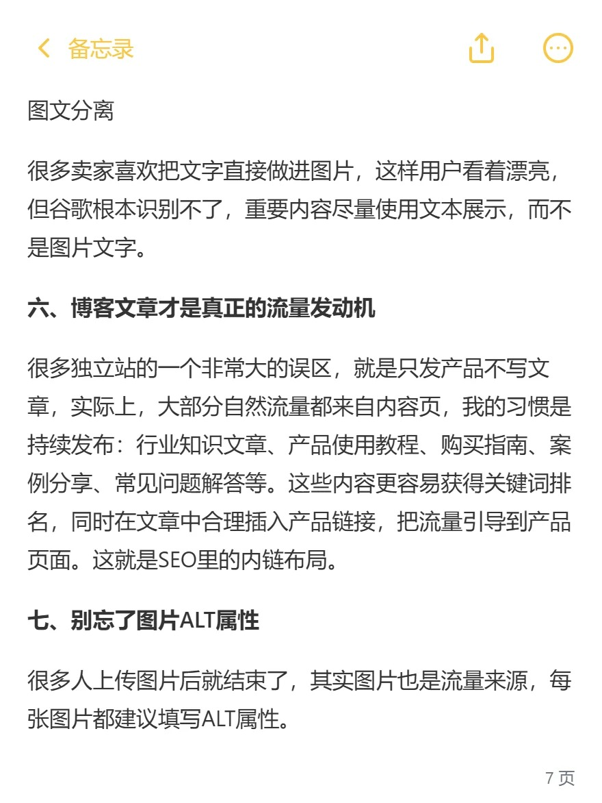
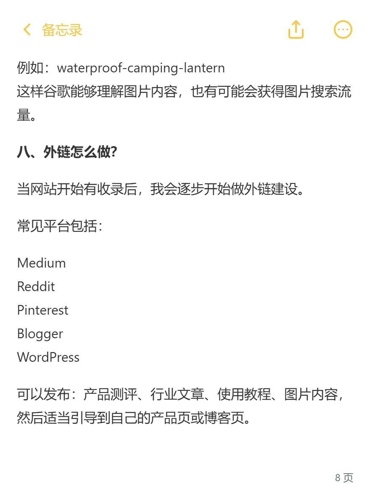
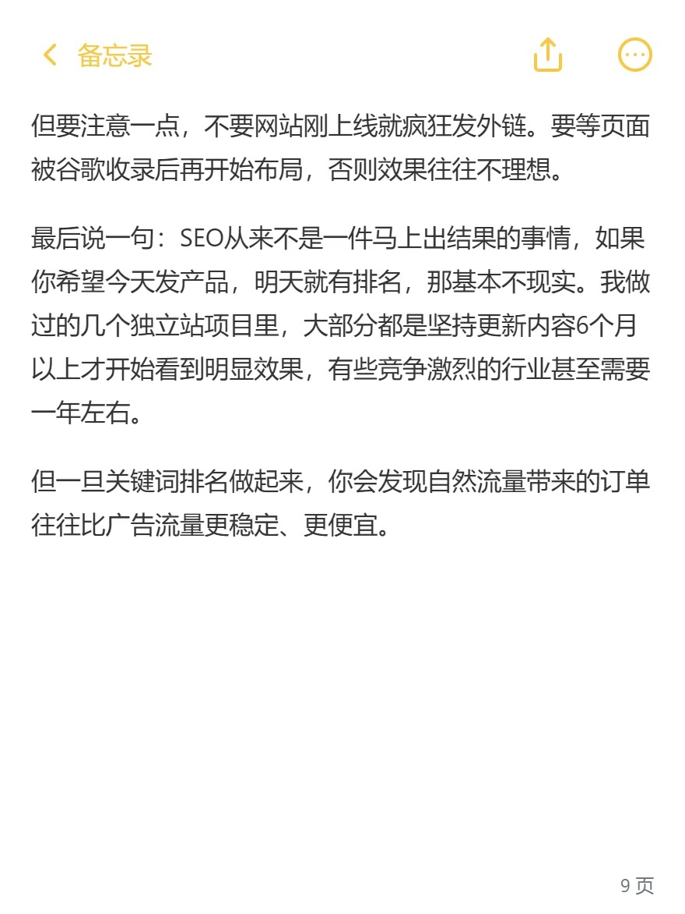

The introduction to Google SEO Independent Station
From titles and descriptions to keywords, product pages, blogs and external links, organize the basic operations of the independent SEO. The article is based on a 9-page contribution, which is directly read and retrieved in the body.
Read the alarm: the map retains the original text. The text supplements the boundaries of the rules of fixed character numbers, keyword density, admission of judgement and the timing of the outer chain, with no guarantees of effect and periodicity.

I. What the hell is SEO?
The SEO makes it easier for the search engine to find and understand pages and to obtain a natural display in the search by improving the content, structure and technical basis of the site. Google's natural ranking is not an advertising post for money, but content, technology and operation still require input.
Access is provided when the product page or article meets the user ' s needs. The construction of the SEO can be seen as a long-term content asset, but not as a guarantee of buy-in, ranking and continuous flow.
II. How does the title, description and URL of the SEO be written?
Title: Accuracy, Unique, Readable
Each page revolves around a stand-alone theme, with important messages moving as far as possible, using the core word naturally and without multiplicity. The original text suggests that the English title is about 60-65 characters, which can be used as an editorial reference, but not a fixed limit set by Google; The display will be influenced by the equipment and width and the title may also be rewritten.
Example: Portable Camping Lantern | Rechargeable Outdoor Light I'm sorry. The English case is consistent, not a ranking condition.
Description: Real value of summary page
Naturally, it includes products, uses and real service advantages. The 140-160 characters in the original version are also references, not admission rules. The description does not guarantee that it will become a search summary as it is.
Example: Rechargéable camping lantern with long Battery life, waterproof signature and fast worldship shipping.

URL: Simple and meaningful
Available /rechargeable-camping-lantern This descriptive path divides the English word by hyphenation, which is consistent with the case policy. The Chinese URL is not unusable, nor is it a SEO taboo; Do not randomly change existing web sites for formal reasons, and re-direction and inner chain are addressed when moving.

III. How do you view the web site SEO information and inclusion?
Try Ctrl+U to see source code in the desktop browser, then find it in Ctrl+F <title> with meta name="description" I'm sorry. Dynamic pages also need to check the rendering content, and the source code is not always the final page.
site:你的网址 The search results can be viewed with help, but the results are incomplete. The search cannot directly prove unrecorded; To confirm a specific page state, the Google Seach Console site should be used to check to distinguish between capture, index and actual display.

IV. How exactly do we find the keywords?
The starting point is product, use of scenes, target customers and search intentions, and not just the selection of words by perception. Google Keyword Planner can help understand the word and search needs, but the level of competition in it mainly reflects the competition of advertisers and is not the same as natural search for SEOs.
Tools such as Ahrefs, Semrush and Ubersuggest listed in the original version can support the research competition page; The third-party indicator is an estimate, not a Google rating. The new station can explore specific long-end demand, but low search volumes or long words are not always easy to rank.
Put the candidate word in Google photo search, which can assist in checking if the same product is pointed at; Still check the page type and user intent of the normal search results and cannot determine whether the keyword is correct by a picture alone.

V. How can product page structures be optimized?
Sets a clear main title for the page, using organizational specifications, uses, comparisons, deliveries and frequently asked questions such as H2 and H3. A clear H1 is the editorial norm of the site, not the absolute rule that “multiple H1 cannot rank”. The header hierarchy expresses the structure, not just to adjust the characters.
Do not pursue fixed keyword density by 2-8% of the original: Google does not have such a common optimal ratio. Answering questions naturally and avoiding unnecessary duplication.
Important content should be presented in the HTML body, not just in pictures. The search engine can use photographic information, but the text is more accessible, accessible and accessible; Can't say Google can't recognize the image text at all.

VI. LINKING THE ENTERPRISE WITH BRIEFING CONTEXTS AND PRODUCTS
It is important not to publish only products, but also to provide useful content around industry knowledge, the use of curricula, purchase guides, cases and frequently asked questions. However, not all independent sites have a large part of their traffic from blogs, and the type of page should be determined by business needs.
The articles are naturally linked to the relevant product or service, allowing the reader to continue to solve the problem; The product page can also be linked to the installation, selection or use guide. Do not add unrelated links or batch production of duplicate articles for " inner chain rings " .

VII. Picture naming and ALT properties
Photo file names can be succinctly described, e.g. waterproof-camping-lantern.jpg I'm sorry. Art uses natural language to describe pictures, rather than copying keyword lists, such as “waterproof camping lamps are used next to tents”. The description must be consistent with actual picture and product capabilities.
(a) The picture providing the information should have a meaningful alternative text; Purely decorative pictures can be used to use empty ALTs to avoid interference with assistive reading. The text combination enhances understanding and does not guarantee the flow of photo searches.
VIII. How do you do it in the outer chain?
The original draft, which refers to Mediam, Reddit, Pinterstést, Blogger and WordPress, allows for the sharing of product assessments, curricula, industry views or pictures around real user needs and links to relevant pages when the rules allow and do help.
Do not use these platforms as tools for bulk links. Focus on relevance, original value and community rules, and avoid selling and selling links, garbage reviews or automated external chains that convey the weight of ranking; The appropriate link attributes should be used for fee-based and user-generated links.
“The outside chain must wait for admission” is not a fixed rule for Google. More important in the early days of the service is that it is accessible, contentable and recommendable, and that external references themselves can help to find the page.

IX. How long does SEO take and how does it work?
The experience shared by the original authors is that some projects have been updated for more than six months before their effects become apparent and that the competitive industry may be longer. This is an individual experience, not a fixed cycle; Different pages, markets, competition and technical issues can lead to different outcomes.
Search, display and click are regularly viewed by Search Console, which is then combined with valid queries, orders and content inputs to evaluate business value. Natural flows are not necessarily more stable or cheaper than advertising, and should not be ranked at the expense of transformation and cost.

Starting with basic technical checks, page content and the division of keywords, the inner chain and content are gradually being improved. Needed Support to View Google SEO and ranking service optimization, or understand Google Ads Management.
I hope this piece will help you to stay out of your way. Your recognition is the driving force behind my continued sharing and creativity.
Official references: Google SEO introductory guide, Set Search Operator, Keyword planners ' statistical information.